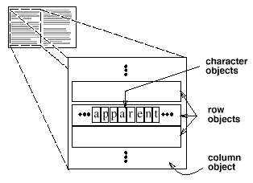
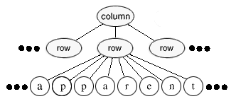
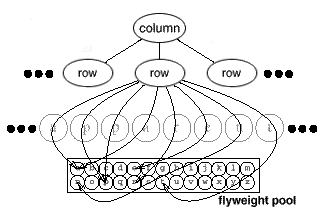
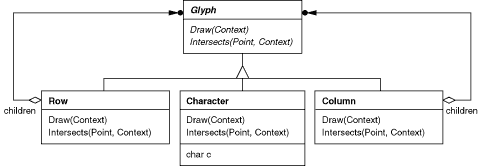
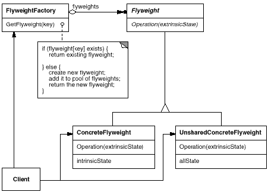
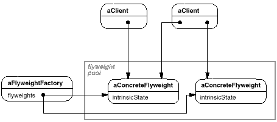
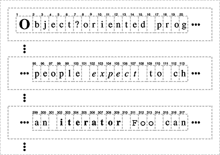
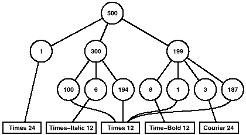
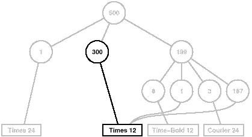
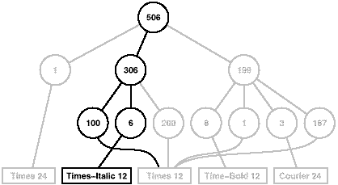

class Glyph {
public:
virtual ~Glyph();
virtual void Draw(Window*, GlyphContext&);
virtual void SetFont(Font*, GlyphContext&);
virtual Font* GetFont(GlyphContext&);
virtual void First(GlyphContext&);
virtual void Next(GlyphContext&);
virtual bool IsDone(GlyphContext&);
virtual Glyph* Current(GlyphContext&);
virtual void Insert(Glyph*, GlyphContext&);
virtual void Remove(GlyphContext&);
protected:
Glyph();
};
class Character : public Glyph {
public:
Character(char);
virtual void Draw(Window*, GlyphContext&);
private:
char _charcode;
};
class GlyphContext {
public:
GlyphContext();
virtual ~GlyphContext();
virtual void Next(int step = 1);
virtual void Insert(int quantity = 1);
virtual Font* GetFont();
virtual void SetFont(Font*, int span = 1);
private:
int _index;
BTree* _fonts;
};


GlyphContext gc;
Font* times12 = new Font("Times-Roman-12");
Font* timesItalic12 = new Font("Times-Italic-12");
// ...
gc.SetFont(times12, 6);

gc.Insert(6);
gc.SetFont(timesItalic12, 6);

const int NCHARCODES = 128;
class GlyphFactory {
public:
GlyphFactory();
virtual ~GlyphFactory();
virtual Character* CreateCharacter(char);
virtual Row* CreateRow();
virtual Column* CreateColumn();
// ...
private:
Character* _character[NCHARCODES];
};
GlyphFactory::GlyphFactory () {
for (int i = 0; i < NCHARCODES; ++i) {
_character[i] = 0;
}
}
Character* GlyphFactory::CreateCharacter (char c) {
if (!_character[c]) {
_character[c] = new Character(c);
}
return _character[c];
}
Row* GlyphFactory::CreateRow () {
return new Row;
}
Column* GlyphFactory::CreateColumn () {
return new Column;
}